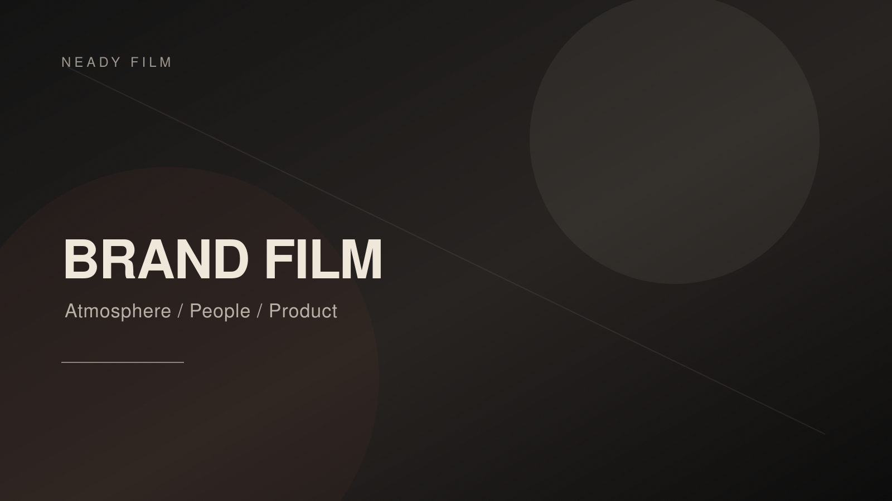
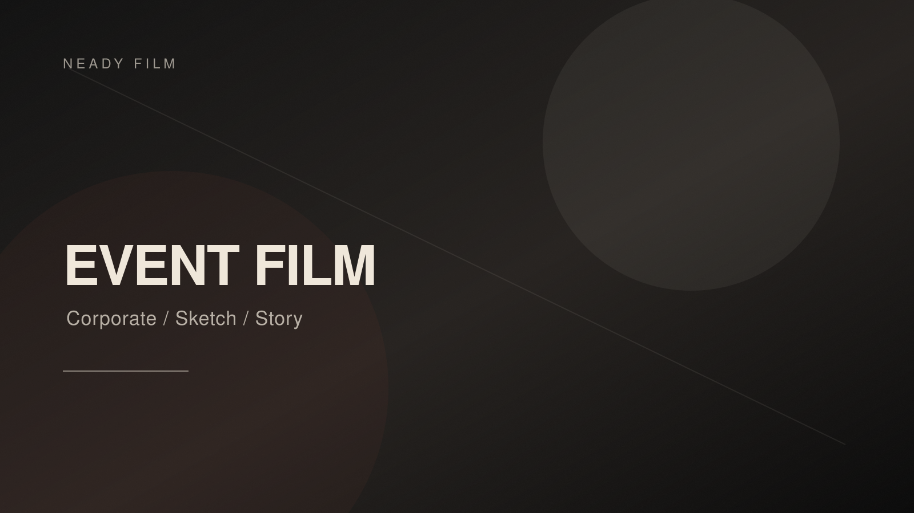
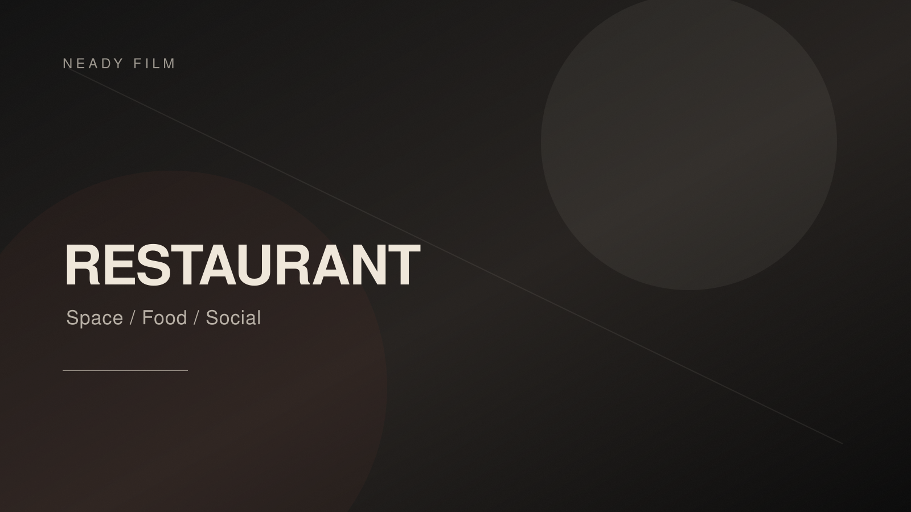
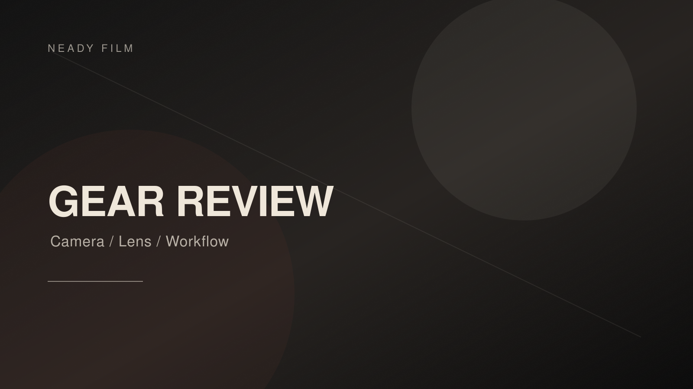
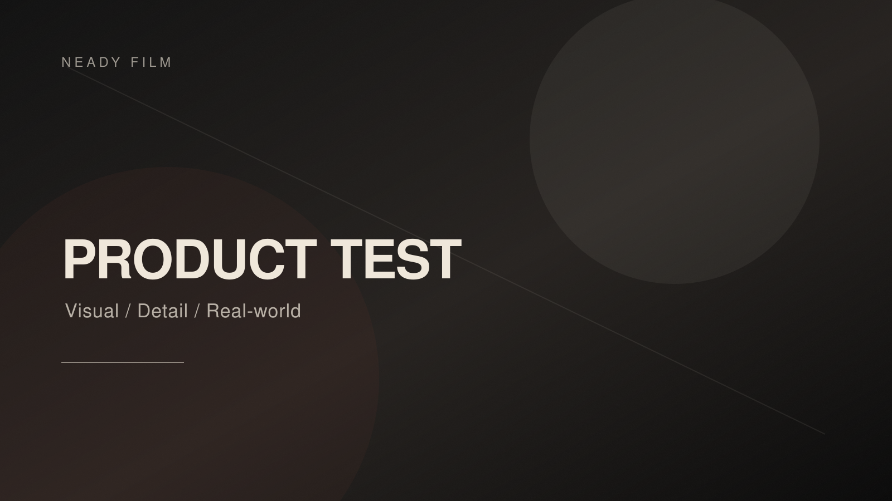

Brand Film / 2026
Project 01 — Brand Mood Film
브랜드의 분위기, 제품의 존재감, 사람의 디테일을 중심으로 설계한 무드 필름입니다.
- 역할
- 연출 / 촬영 / 편집
- 상태
- 실제 프로젝트로 교체 예정
Selected Works
현재는 실제 자료를 넣기 전의 데모 구성입니다. 각 카드의 썸네일, 영상 링크, 클라이언트명, 역할, 설명 문구를 실제 프로젝트 자료로 교체하면 바로 포트폴리오로 사용할 수 있습니다.

Brand Film / 2026
브랜드의 분위기, 제품의 존재감, 사람의 디테일을 중심으로 설계한 무드 필름입니다.

Event Film / 2026
현장의 분위기, 주요 장면, 인터뷰를 연결해 구성한 다큐멘터리 스타일의 행사 스케치 영상입니다.

Restaurant / Social Content
레스토랑, 공간, 라이프스타일 브랜드의 분위기를 지속적으로 쌓아가는 숏폼 콘텐츠입니다.
Performance / Dance Film
리듬, 신체, 공간, 무대의 에너지를 중심으로 구성한 움직임 기반 영상입니다.

Gear Review / Visual Test
카메라와 렌즈를 실제 촬영 환경에서 이미지, 움직임, 워크플로우 중심으로 검증하는 리뷰 영상입니다.

Product Review / Color Workflow
제품의 특징을 실제 사용 장면, 시네마틱 샘플, 명확한 리뷰 구조로 전달하는 영상입니다.
Services
브랜드 소개 영상, 제품/공간 무드 필름, 캠페인 영상.
기업 행사, 현장 스케치, 인터뷰 기반 하이라이트 영상.
무용, 공연, 쇼케이스, 라이브클립, 움직임 기반 영상.
릴스, 숏폼, 인스타그램 운영 콘텐츠, 월간 업로드 패키지.
브랜드 인터뷰, 인물 기록, 유튜브 시리즈, 토크 콘텐츠.
카메라, 렌즈, 장비, 제품을 실제 촬영 환경에서 검증하는 리뷰 영상.
About
NEADY FILM은 서울을 기반으로 활동하는 영상 제작 스튜디오입니다. 무용과 영상 작업을 이어온 정범석의 시선을 바탕으로, 브랜드 필름, 행사 스케치, 공연 영상, 인터뷰 콘텐츠, 소셜미디어 영상을 제작합니다.
우리는 단순히 장면을 기록하는 것보다, 사람과 공간, 브랜드가 가진 고유한 분위기를 발견하고 그것을 영상의 흐름으로 설계하는 것을 중요하게 생각합니다.
Process
프로젝트의 목적, 톤, 타깃을 함께 정리합니다.
촬영 구성, 무드, 인터뷰 질문, 일정 등을 설계합니다.
프로젝트에 맞는 장비와 방식으로 촬영합니다.
편집, 색보정, 사운드, 자막으로 흐름을 완성합니다.
웹, 유튜브, 인스타그램, 행사 목적에 맞는 포맷으로 납품합니다.
Contact
브랜드 영상, 행사 기록, 공연 영상, 인터뷰 콘텐츠, 소셜미디어 영상 제작 문의를 받고 있습니다. 아래 연락처와 링크는 실제 정보로 교체하면 됩니다.